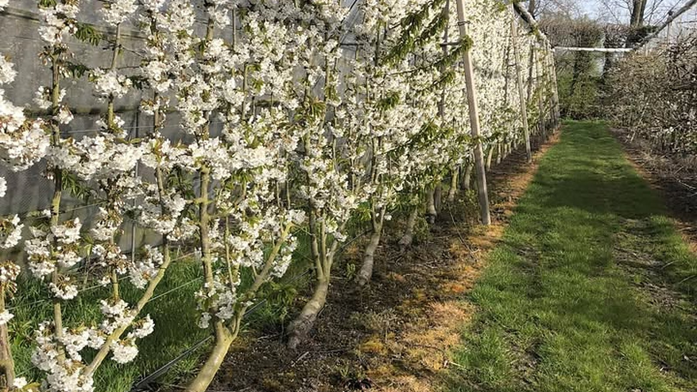
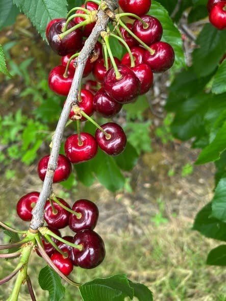
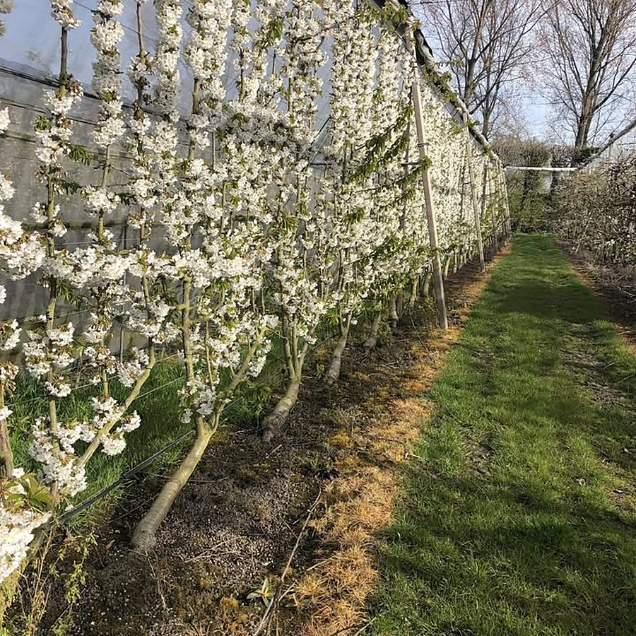
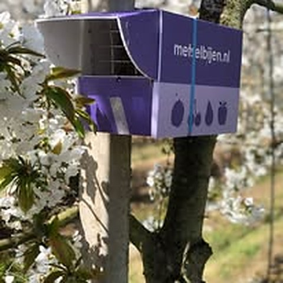
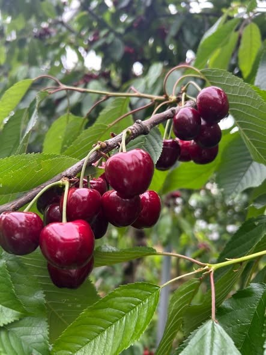
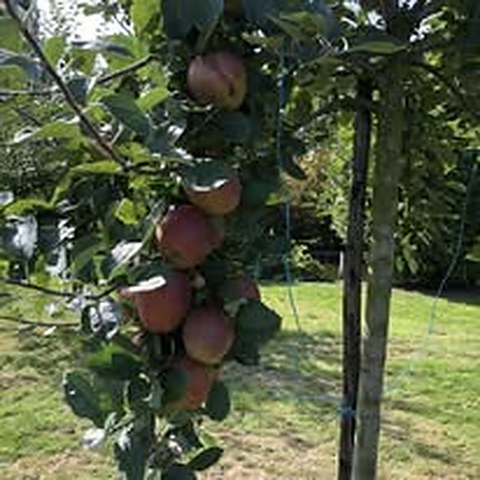
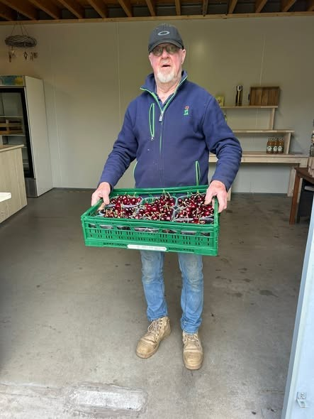

Fruit uit eigen boomgaard
Kersen in de zomer, daarna appels en peren. Vers van onze eigen bomen.


Landwinkel De Zelke ligt midden in onze boomgaard in Zierikzee. Kersen, appels en peren vers van de boom, met verse groente en streekproducten.
Wat er ligt, hangt af van het seizoen. Het fruit komt van onze eigen bomen.
Kersen in de zomer, daarna appels en peren. Vers van onze eigen bomen.
Groente van het seizoen, vers in de winkel.
Lekkers uit de streek, mooi om mee te nemen of cadeau te doen.
In het kersenseizoen is de winkel open van 10.00 tot 17.00 uur. Twijfelt u wat er ligt? Bel ons even voordat u komt.
Alles begint in onze eigen boomgaard aan de Julianastraat.





Brouwer fruit is een fruitteeltbedrijf in Zierikzee. We telen kersen, appels en peren in onze eigen boomgaard.
In Landwinkel De Zelke, midden tussen de bomen, verkopen we dat fruit zelf. Vers geplukt, aangevuld met verse groente en streekproducten.
U vindt Landwinkel De Zelke aan de Julianastraat 27 in Zierikzee.
In het kersenseizoen open van 10.00 tot 17.00 uur.